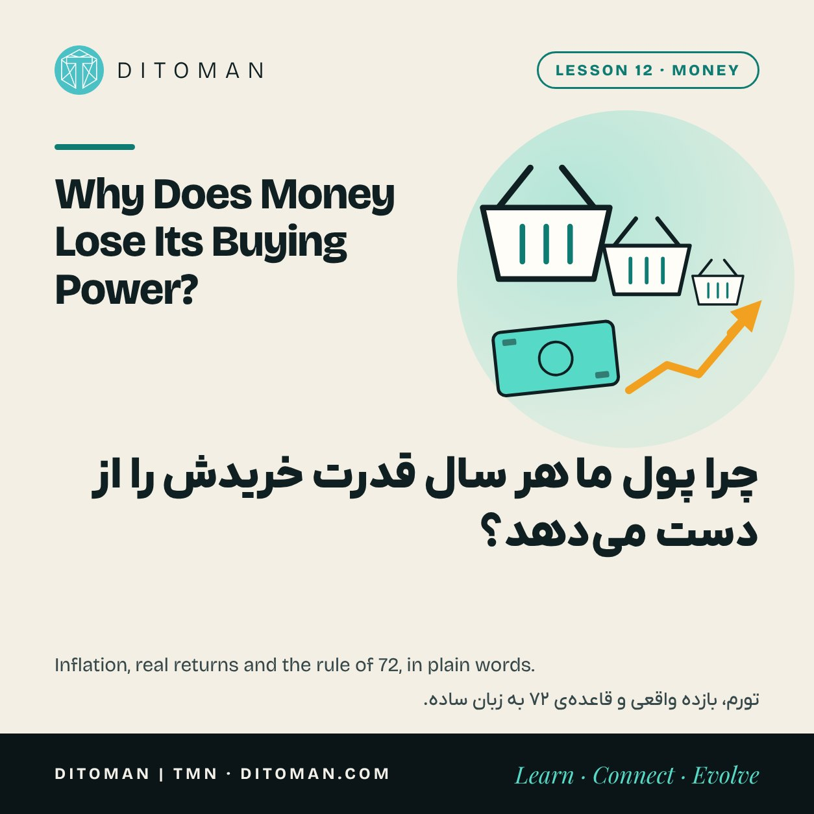
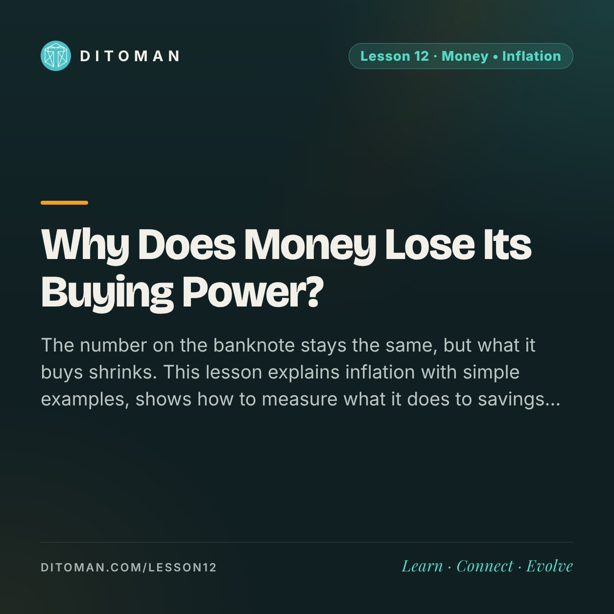

Why Does Money Lose Its Buying Power?
چرا پول ما هر سال قدرت خریدش را از دست میدهد؟
The number on the banknote stays the same, but what it buys shrinks. This lesson explains inflation with simple examples, shows how to measure what it does to savings, and looks honestly at whether bitcoin or stablecoins can help.
عدد روی اسکناس همان است، ولی چیزی که با آن میشود خرید کوچکتر میشود. این درس تورم را با مثالهای ساده توضیح میدهد، نشان میدهد چطور اثرش را روی پسانداز حساب کنیم و صادقانه بررسی میکند که بیتکوین یا استیبلکوین کمکی میکنند یا نه.
Lesson Content
محتوای درس
Read the lesson in English or Persian.
درس را به فارسی یا انگلیسی بخوانید.
A few years ago a single banknote paid for a full bag of groceries. Today the same banknote buys part of that bag. Nobody took the note away. What changed is how much it can buy. That quiet change has a name: inflation.
We are looking at this together because almost every money decision, from saving to borrowing to buying crypto, starts with one question: what will this money be worth later?
01. What inflation is
Inflation is a general rise in prices over time. One product getting more expensive is not inflation. Inflation is when the price of most things rises together, so each unit of money buys less.
Statisticians measure it with a basket: a fixed list of things a typical household buys, such as food, rent, transport and clothes. They price the same basket every month. If the basket cost 100 last year and costs 140 now, inflation over the year was 40 percent.
02. Where it comes from
Economists argue about the details, but three sources come up again and again.
More money than goods: when the amount of money in an economy grows faster than the things there are to buy, prices rise.
Higher costs: when energy, imports or wages become more expensive, producers pass the cost on.
Expectations: when everyone expects prices to rise, sellers raise prices early and buyers rush to buy, which pushes prices up further.
03. Two numbers you will see in the news
Point-to-point inflation compares prices this month with the same month last year. Twelve-month inflation averages the whole past year, so it moves more slowly.
For example, the Statistical Centre of Iran reported that in the month ending 21 June 2026 point-to-point inflation was 88.6 percent and twelve-month inflation was 62 percent. Both numbers describe the same economy. They answer different questions.
04. What it does to savings
Money that sits still loses buying power at the speed of inflation. The table shows what 100 million in cash can still buy after a few years.
| Yearly inflation | After 1 year | After 3 years | After 5 years |
|---|---|---|---|
| 5% | 95 million | 86 million | 78 million |
| 20% | 83 million | 58 million | 40 million |
| 40% | 71 million | 36 million | 19 million |
A quick way to estimate: divide 72 by the inflation rate. The answer is roughly how many years it takes for prices to double. At 6 percent, about twelve years. At 36 percent, about two years.
This is also why a bank's interest rate needs a second look. If a deposit pays 20 percent and prices rise 40 percent, the balance grows but its buying power falls. The honest number is interest minus inflation, called the real return.
05. Can bitcoin or stablecoins help?
Bitcoin has a fixed limit of 21 million coins, so nobody can print more of it. That is a real difference from ordinary money. But a fixed supply does not mean a steady price. Bitcoin has fallen by more than half several times. It can protect buying power over one period and damage it over another.
A dollar stablecoin follows the dollar, as Lesson 11 explained. That can be steadier than a weaker currency, but the dollar has inflation too, and the token adds its own risks: the issuer, the backing and the way out.
So neither is a shield you can lean on without thinking. They are tools with their own risks, and the questions from Lesson 06 still apply.
What to take from this
Inflation means the same money buys less over time.
Look at the real return: interest minus inflation.
The rule of 72 turns an inflation rate into a number of years you can feel.
Bitcoin has a fixed supply but an unsteady price. A stablecoin follows the dollar and depends on its issuer.
Understanding inflation does not tell you what to buy. It tells you which question to ask first.
چند سال پیش با یک اسکناس میشد یک سبد کامل خرید کرد. امروز با همان اسکناس فقط بخشی از آن سبد را میشود خرید. کسی اسکناس را از ما نگرفته. چیزی که عوض شده مقدار خریدی است که از آن برمیآید. اسم این تغییر آرام «تورم» است.
این موضوع را با هم نگاه میکنیم، چون تقریباً هر تصمیم مالی، از پسانداز و وام تا خرید کریپتو، با یک پرسش شروع میشود: این پول بعداً چقدر میارزد؟
۰۱. تورم چیست
تورم یعنی بالا رفتن عمومی قیمتها در طول زمان. گران شدن یک کالا تورم نیست. تورم وقتی است که قیمت بیشتر چیزها با هم بالا میرود و هر واحد پول، خرید کمتری میکند.
آمارگیرها آن را با یک «سبد» اندازه میگیرند: فهرست ثابتی از چیزهایی که یک خانوار معمولی میخرد، مثل خوراک، اجاره، حملونقل و پوشاک. هر ماه قیمت همان سبد را حساب میکنند. اگر سبد پارسال ۱۰۰ بوده و امسال ۱۴۰ شده، تورم یکساله ۴۰ درصد است.
۰۲. از کجا میآید
اقتصاددانها سر جزئیات بحث دارند، ولی سه ریشه بارها تکرار میشود.
پول بیشتر از کالا: وقتی مقدار پول در اقتصاد تندتر از کالاها و خدمات موجود رشد کند، قیمتها بالا میرود.
هزینهی بالاتر: وقتی انرژی، واردات یا دستمزد گرانتر شود، تولیدکننده این هزینه را روی قیمت میکشد.
انتظار: وقتی همه منتظر گرانی باشند، فروشنده زودتر قیمت را بالا میبرد و خریدار زودتر میخرد و همین، قیمت را بالاتر میبرد.
۰۳. دو عددی که در خبرها میبینید
تورم نقطهبهنقطه قیمتهای این ماه را با همین ماه در سال قبل مقایسه میکند. تورم دوازدهماهه میانگین کل یک سال گذشته است و آرامتر تغییر میکند.
برای نمونه، مرکز آمار ایران اعلام کرد در خرداد ۱۴۰۵ تورم نقطهبهنقطه ۸۸٫۶ درصد و تورم دوازدهماهه ۶۲ درصد بوده است. هر دو عدد یک اقتصاد را توصیف میکنند، ولی به دو پرسش متفاوت جواب میدهند.
۰۴. با پسانداز چه میکند
پولی که بیحرکت بماند، با سرعت تورم قدرت خریدش را از دست میدهد. جدول نشان میدهد ۱۰۰ میلیون پول نقد بعد از چند سال هنوز چقدر خرید میکند.
| تورم سالانه | بعد از ۱ سال | بعد از ۳ سال | بعد از ۵ سال |
|---|---|---|---|
| ۵٪ | ۹۵ میلیون | ۸۶ میلیون | ۷۸ میلیون |
| ۲۰٪ | ۸۳ میلیون | ۵۸ میلیون | ۴۰ میلیون |
| ۴۰٪ | ۷۱ میلیون | ۳۶ میلیون | ۱۹ میلیون |
یک راه سریع برای تخمین: عدد ۷۲ را بر نرخ تورم تقسیم کنید. جواب تقریباً تعداد سالهایی است که قیمتها دو برابر میشود. با تورم ۶ درصد، حدود دوازده سال. با تورم ۳۶ درصد، حدود دو سال.
برای همین سود بانکی را هم باید دوباره نگاه کرد. اگر سپرده ۲۰ درصد سود بدهد و قیمتها ۴۰ درصد بالا برود، عدد حساب بزرگتر میشود ولی قدرت خریدش کمتر. عدد صادقانه «سود منهای تورم» است که به آن بازده واقعی میگویند.
۰۵. بیتکوین یا استیبلکوین کمکی میکنند؟
بیتکوین سقف ثابت ۲۱ میلیون واحد دارد و کسی نمیتواند بیشتر از آن بسازد. این تفاوتی واقعی با پول معمولی است. ولی عرضهی ثابت به معنی قیمت باثبات نیست. قیمت بیتکوین چند بار بیش از نصف افت کرده است. در یک دوره قدرت خرید را حفظ میکند و در دورهای دیگر به آن آسیب میزند.
استیبلکوین دلاری دنبال دلار حرکت میکند؛ درس ۱۱ این را توضیح داد. این میتواند از یک پول ضعیفتر باثباتتر باشد، ولی خود دلار هم تورم دارد و توکن ریسکهای خودش را اضافه میکند: ناشر، پشتوانه و راه خروج.
پس هیچکدام سپری نیستند که بشود بدون فکر به آن تکیه کرد. ابزارهاییاند با ریسک خودشان، و پرسشهای درس ۶ همینجا هم به کار میآیند.
چه برداشتی کنیم
تورم یعنی همان پول در طول زمان خرید کمتری میکند.
به بازده واقعی نگاه کنید: سود منهای تورم.
قاعدهی ۷۲ نرخ تورم را به تعداد سال تبدیل میکند؛ عددی که میشود حسش کرد.
بیتکوین عرضهی ثابت دارد ولی قیمت بیثبات. استیبلکوین دنبال دلار است و به ناشرش وابسته.
فهمیدن تورم نمیگوید چه بخرید. میگوید اول کدام پرسش را بپرسید.
Next: where your money actually sits
قدم بعد: پول شما واقعاً کجاست
Once you know what inflation does, the next question is where money is kept and who controls it. Lesson 13 compares a bank account, an exchange account and a personal wallet.
وقتی بدانیم تورم چه میکند، پرسش بعدی این است که پول کجا نگه داشته میشود و دست چه کسی است. درس ۱۳ حساب بانکی، حساب صرافی و کیف پول شخصی را کنار هم میگذارد.
Key Concepts
مفاهیم کلیدی
- Inflation
- Price basket (CPI)
- Point-to-point inflation
- Twelve-month inflation
- Buying power
- Real return
- Rule of 72
- Fixed supply
- تورم
- سبد قیمت (شاخص قیمت مصرفکننده)
- تورم نقطهبهنقطه
- تورم دوازدهماهه
- قدرت خرید
- بازده واقعی
- قاعدهی ۷۲
- عرضهی ثابت
Learning Objectives
اهداف یادگیری
- Explain inflation with the price-basket example.
- Tell point-to-point inflation from twelve-month inflation.
- Work out a real return from an interest rate and an inflation rate.
- Use the rule of 72 to estimate how fast prices double.
- Say why neither bitcoin nor a stablecoin is a risk-free answer to inflation.
- تورم را با مثال سبد قیمت توضیح دهید.
- تورم نقطهبهنقطه را از تورم دوازدهماهه تشخیص دهید.
- از نرخ سود و نرخ تورم، بازده واقعی را حساب کنید.
- با قاعدهی ۷۲ تخمین بزنید قیمتها چقدر زود دو برابر میشود.
- بگویید چرا بیتکوین و استیبلکوین هیچکدام جواب بیریسک تورم نیستند.
Quiz
آزمونک
Check what stayed with you. The answer is under each question.
ببین چه چیزی در ذهنت مانده. پاسخ زیر هر پرسش آمده است.
Question 1
پرسش ۱
What is inflation?
تورم چیست؟
A. One product becoming more expensive
الف. گران شدن یک کالا
B. A general rise in prices over time
ب. بالا رفتن عمومی قیمتها در طول زمان
C. A fall in the number of banknotes
ج. کم شدن تعداد اسکناسها
Correct answer: B
پاسخ درست: ب
Question 2
پرسش ۲
A deposit pays 20% and inflation is 40%. What happens to its buying power?
سپردهای ۲۰٪ سود میدهد و تورم ۴۰٪ است. قدرت خرید آن چه میشود؟
A. It rises
الف. بیشتر میشود
B. It stays the same
ب. ثابت میماند
C. It falls
ج. کمتر میشود
Correct answer: C. The real return is negative.
پاسخ درست: ج. بازده واقعی منفی است.
Question 3
پرسش ۳
With 36% yearly inflation, roughly how long until prices double (rule of 72)?
با تورم سالانهی ۳۶٪، قیمتها حدوداً چند سال بعد دو برابر میشود (قاعدهی ۷۲)؟
A. About 2 years
الف. حدود ۲ سال
B. About 7 years
ب. حدود ۷ سال
C. About 12 years
ج. حدود ۱۲ سال
Correct answer: A
پاسخ درست: الف
Question 4
پرسش ۴
Point-to-point inflation compares this month's prices with…
تورم نقطهبهنقطه قیمتهای این ماه را با چه چیزی مقایسه میکند؟
A. Last month
الف. ماه قبل
B. The same month last year
ب. همین ماه در سال قبل
C. The average of the last ten years
ج. میانگین ده سال گذشته
Correct answer: B
پاسخ درست: ب
Question 5
پرسش ۵
Bitcoin's supply is fixed. What does that mean for its price?
عرضهی بیتکوین ثابت است. این برای قیمتش چه معنایی دارد؟
A. The price is steady
الف. قیمتش باثبات است
B. The price can only rise
ب. قیمتش فقط بالا میرود
C. The price can still swing sharply
ج. قیمتش هنوز میتواند شدید بالا و پایین برود
Correct answer: C
پاسخ درست: ج
Sources
منابع
- IMF, Back to Basics: Inflation
- Euronews: Statistical Centre of Iran inflation figures for the month ending 21 June 2026
- Bitcoin: A Peer-to-Peer Electronic Cash System (whitepaper)
The table and the rule of 72 are arithmetic examples, not forecasts. Nothing here is investment advice.
جدول و قاعدهی ۷۲ مثال حسابیاند، نه پیشبینی. هیچ بخشی از این درس توصیهی سرمایهگذاری نیست.
با هم دنبال میکنیمFollow along
New lessons are announced first on Ditoman's channels.
درسهای تازه اول در کانالهای دیتومان معرفی میشوند.